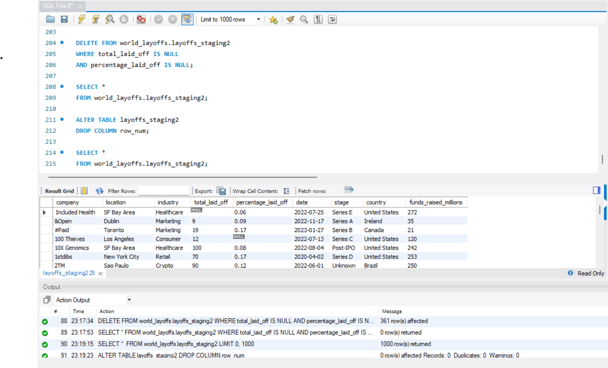

Global Layoffs Analysis
Conducted an in-depth analysis of a dataset capturing layoff trends across top companies to uncover key patterns and insights.
The following screenshots highlight key findings:
1. Data Cleaning and Preparation: Processed and transformed raw layoff data to ensure accuracy and usability for analysis.
2. Performed a thorough analysis to identify and eliminate duplicate entries from the dataset.
3. Conducted a detailed analysis to remove null values and irrelevant columns, enhancing the dataset's quality and relevance for analysis.
4. Conducted exploratory data analysis (EDA) and derived the following key insights:
Visuals
Fig 1 & 2: Data analysis
Fig 3 & 4: Removing duplicate values
Fig 5: Removing null values and unwanted columns
Fig 6,7,8: EDA for key insights